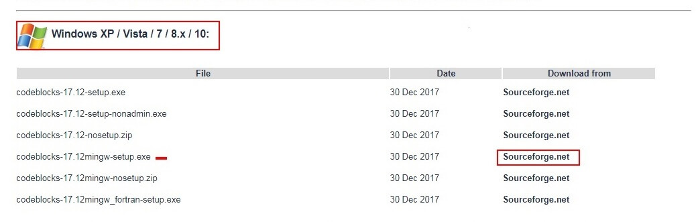
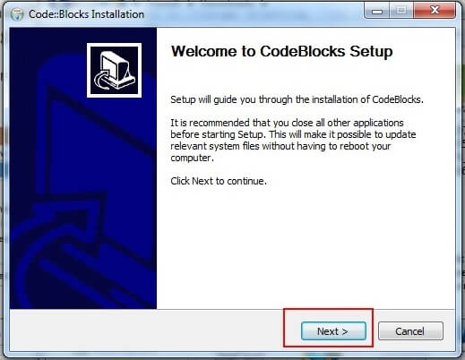
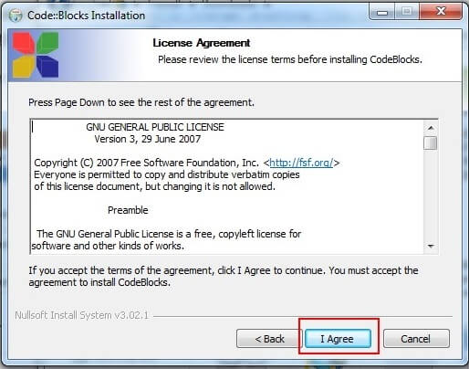
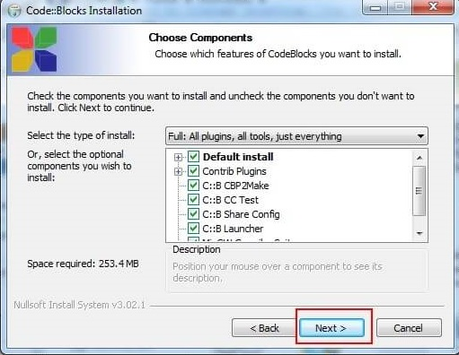
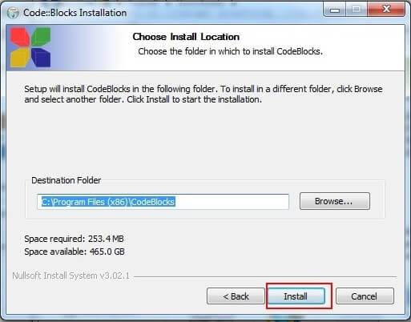
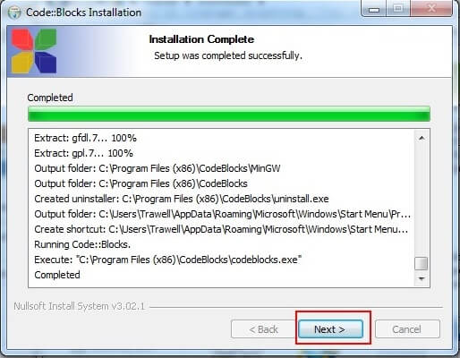
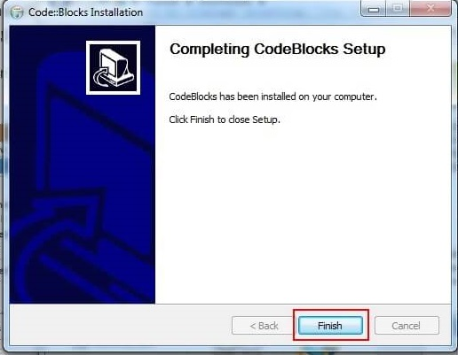
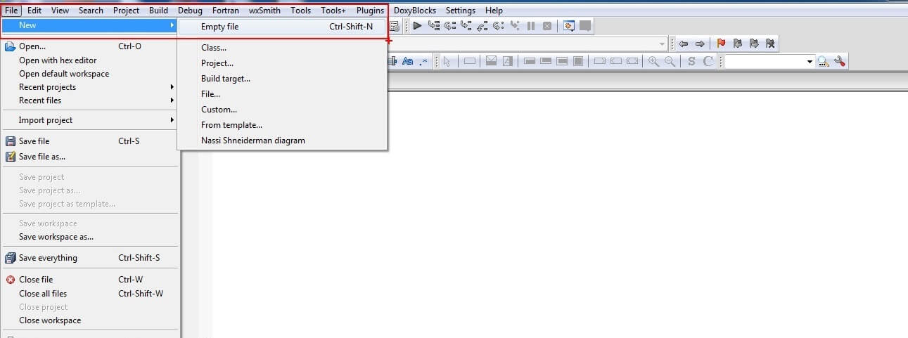
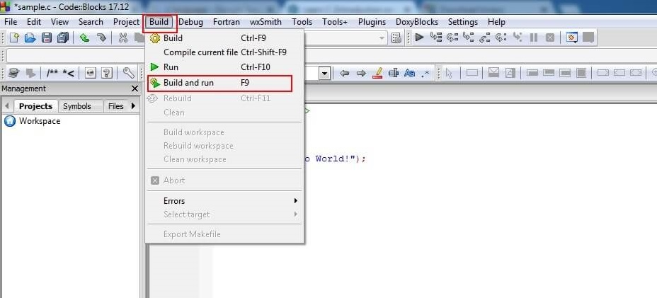

C Language Introduction
C Language was developed by Dennis Ritchie between 1969 and 1973 at AT & T’s Bell laboratories. It is a powerful general-purpose,
Imperative, Procedural, computer Programming language. Initially it is used to re-implement the UNIX operating system,
later it has become one of the most widely used computer programming languages. C language is one of the most popular
programming language because it is reliable, simple and easy to use. Major parts of popular operating systems like Windows,
LINUX and UNIX are written in C.
Facts About C Programming Language
- The C language was first formalized by American National Standards Institutes (ANSI) in the year 1988.
- C was invented to write UNIX operating system.
- C language is a successor of B Language which was introduced in 1970's and it is also called as 'Basic Combined Programming
Language' (BCPL).
- Linux operating system, Mysql Data Base are written in C.
- C is a portable language, the source code written in one operating system works in another operating system without any
change.
Uses of C Programming Language
Initially C programs are developed to make-up the operating systems. Here are some of the examples of the uses of C programming.
- Operating Systems
- Network Drivers
- Databases
- Compilers
- Assemblers
- Text Editors
- Modern Programs
- Mobile Applications
- Desktop Applications
- Games & Animations etc.
Advantages of C Programming language
- Programs written in C are very efficient, fast and easy to understand
- C is a medium level language, it can be used for both low-level and high-level languages.
- C is a structured programming language, where complex programs to be broken into simple programs called Functions.
- C is a portable, which means source code written in one computer works in another computer without any changes in the
source code.
- C language is the building blocks of many other popular programming languages.
- C has a built-in library which provides number of functions.
Disadvantages of C Programming Language
- C is a Procedural Oriented language. It doesn’t have the concept of Object Oriented Programming (OOP) features.
- The Major disadvantage of C language is runtime type checking in not available.
- C doesn’t provide constructors and Destructors.
- C doesn’t have the concept of NameSpace like C++.
Now lets see how to compile and run C programs in your os. These are necessary steps for executing C programs on your computer.
Setting up Compile and run C Program on your OS
For running a C program you need compilers and text editors. There are number of Compilers and Text editors. Here I will
show you two easy methods for compilation and execution of your C programs. You can use any one of these two methods.
Method 1: Run C program online
There are several tools and sites you can use to compile and run your C program. But, I personally prefer
ideone.com. It is very simple tool and easy to compile and run your C programs.
Go to
ideone.com > write a Programe > Run
Method 2: Run C program in Windows Operating System
Compile and run C program in Windows you need to download a software called Code:Blocks. In this method I will show you
how to download the software, writing C program, save with .c extension and running the program.
Step 2:Under
Windows XP/Vista/7/8.x/10 click the link mingw-setup.exe from
Sourceforge.net> as highlighted in the below image. Then the software will start downloading.

Step 3: Now open the downloaded Code::Block file and click NEXT.

Step 4: click AGREEE

Step 5: click NEXT

Step 6: click on INSTALL

Step 7: After install click on NEXT

Step 8: click on FINISH. Now you no need change anything, the software is installed successfully.

Step 9:Now open the Code::Block and go to FILE > NEW > EMPTY FILE (shortcut: ctrl + shift + N) to open a new
file for writing a C program.

Step 10: write the C program and save the program file with .c extenstion. To save the program file, go to FILE
> SAVE (shortcut: ctrl + s).
Note: The program file name must end with .c extension like “programname.c”.
Step 11: After completing the program go to BUILD > BUILD and RUN (shortcut: F9). Then the program will run
and produce the output on executable file.

This is the easy way to compile and run the C programs in your operating system.
I hope that this complete C tutorial guide will give you a clear idea about what is C language and complete knowledge on
C programming. But before we enter in to programming you need to learn some basics concepts like what are constants,
Variables, Identifiers and Keywords. We will discuss all these topics in the next chapter, stay tuned…